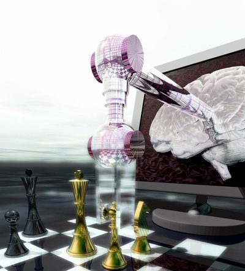 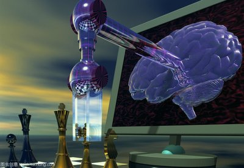 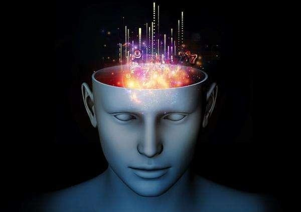 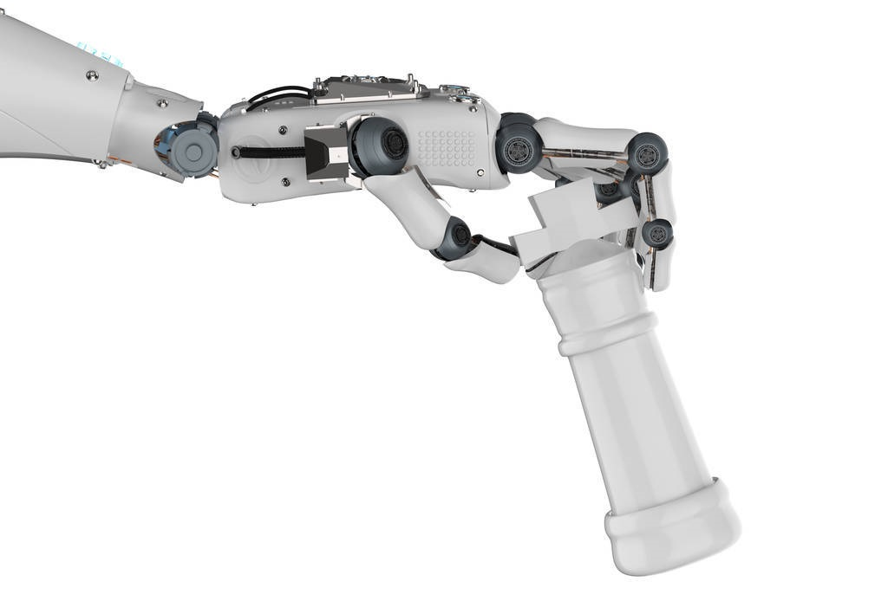 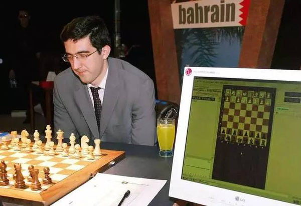
很多人工智能大咖都参与研究过，如1955年纽厄尔编写的NSS程序，1951年麦卡锡编写的下棋程序和α-β搜素法。
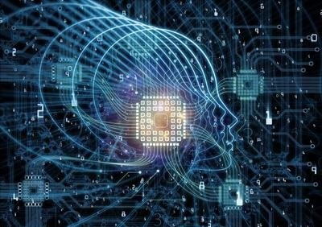 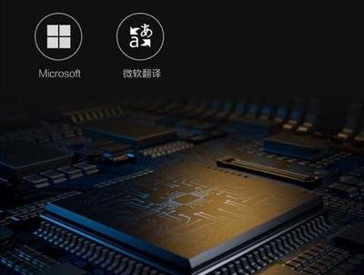 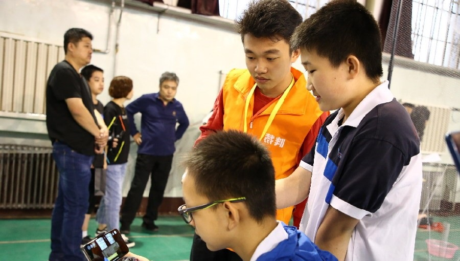
纽厄尔和西蒙从五十年代一直研究到70年代，先后开发了逻辑理论机器（LTM）、通用问题求解器（GPS）、SOAR等。由此构造出他们的认知模型，并最终得出结论，即智能作为一种高级的信息处理过程，可以通过操作物理符号来加以解释。
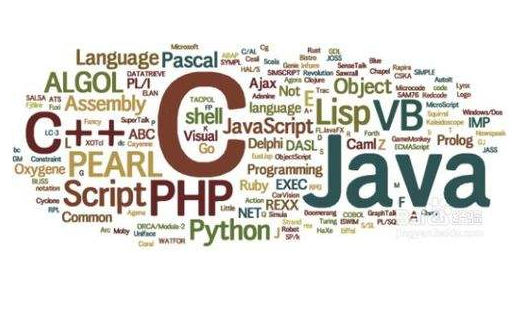 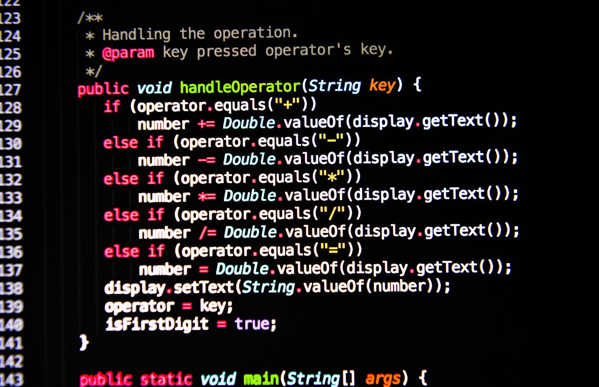 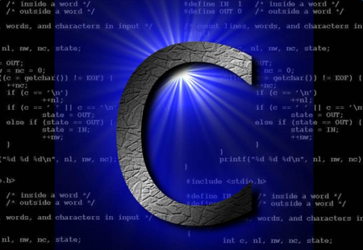
这里只列出和人工智能有关的，包括IPL（信息处理语言，纽厄尔和西蒙）、LISP（表处理语言，麦卡锡）、Prolog（逻辑处理语言，阿兰.科尔迈伦和罗伯特.科沃尔斯基）。
Copyright © 2019 little planet All Rights Reserved